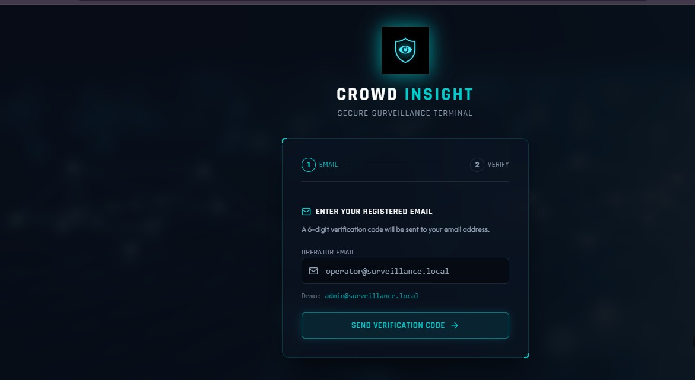
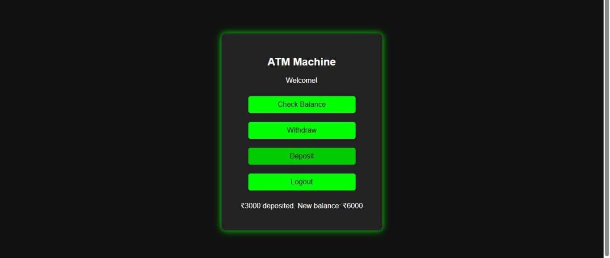
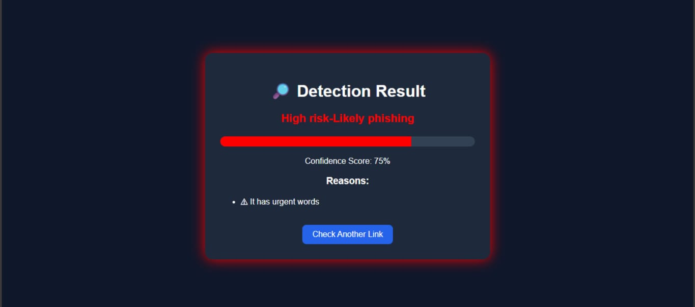

Projects
Skills
I am an aspiring Web Developer focused on building real-world, user-friendly applications using modern web technologies. I enjoy turning ideas into functional solutions and have worked on projects like AI-based crowd detection, secure authentication systems, and phishing link detection. These experiences helped me understand how technology can solve practical problems effectively. I continuously learn and improve my skills to stay updated with current trends in development. My goal is to become a developer who builds secure, efficient, and impactful digital solutions.

Developed a real-time crowd monitoring system using OpenCV to detect human presence. Implemented heatmap visualization to analyze crowd density and movement patterns. Designed prediction logic to identify high-risk areas.

Built a secure login system using OTP verification instead of PIN. Integrated mobile authentication to prevent unauthorized access. Focused on improving security and user trust.

Developed an AI-based model to classify URLs as safe or malicious. Trained the model using datasets to improve accuracy. Designed to enhance cybersecurity awareness and protection.
Email: susimithasivasamy2006@gmail.com
phone no: 8760203988